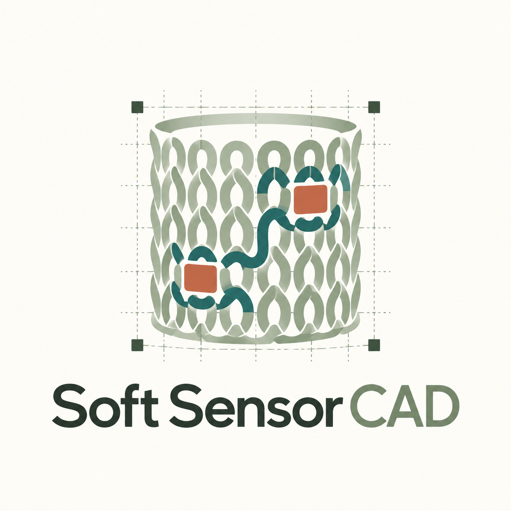
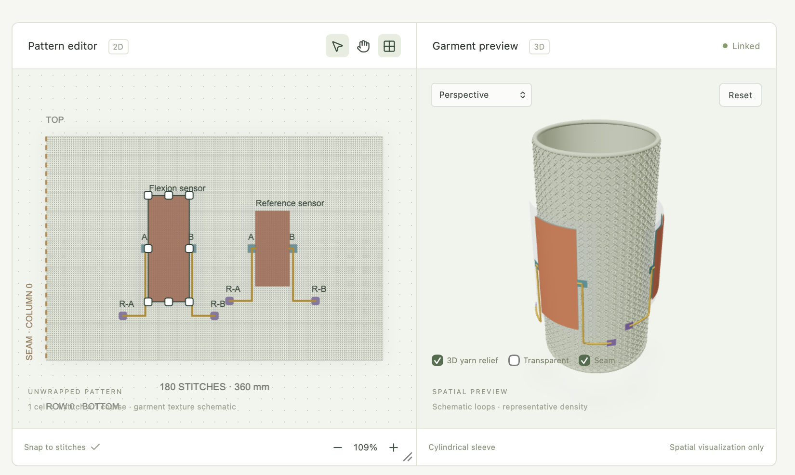

Shape the textile
Choose a knit structure, yarn appearance, garment dimensions, and textile layer stack.
Open CAD Studio ↗
soft sensor STUDIO Open the studio ↗TEXTILE CIRCUIT DESIGN / RESEARCH PROTOTYPE
Explore how sensors, conductive yarns, textile layers, and knitted structures can come together in a wearable soft circuit.

A WORKSPACE FOR CO-DESIGN
Choose a knit structure, yarn appearance, garment dimensions, and textile layer stack.
Open CAD Studio ↗Add sensor concepts, contacts, readout terminals, and conductive paths on the stitch grid.
Explore the circuit editor ↗View loop topology and course-wise stitch ordering to reason about textile construction.
View the stitch graph ↗PROTOTYPE STATUS
Soft Sensor Studio is a research co-design prototype. Its circuit routes and stitch graphs help organize design intent; they do not yet confirm electrical behavior or machine-specific manufacturability. Knitting machine, yarn, and swatch validation are still required.
Explore the research database ↗